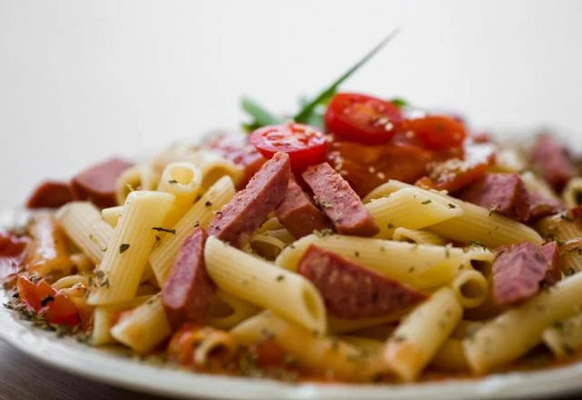

RECEITA - MACARRÃO COM CALABRESA NA PANELA DE PRESSÃO
INGREDIENTES
- 1 pacote de macarrão penne, parafuso, ou gravatinha
- 2 caixinha (a mesma medida da caixinha do molho) de água
- 1 cebola média picada
- Sal a gosto
- 1 caixinha de extrato/polpa/molho de tomate
- 1 lata de creme de leite
- 3 gomos de calabresa picados em rodelas finas
- Óleo ou azeite para refogar a cebola e a calabresa
MODO DE PREPARO
- 1. Em uma panela de pressão, doure a cebola e a calabresa.
- 2. Após dourar, adicione o sal, o molho, as 2 medidas de água, o macarrão e o creme de leite.
- 3. Se o macarrão não tiver completamente coberto, coloque mais água
- 4. Misturar bem, adicionar o sal e fechar a panela.
- 5. Contar 5 minutos a partir do momento em que a panela fizer pressão.
- 6. Polvilhe queijo ralado e bom apetite.